NCALIB REDUN: Redundancy, Align and Selfcal 
The NCALIB option REDUN actually covers three related methods of estimating telescope gain and phase errors from the uv-data itself: Redundancy, Selfcal and Align. All three methods require the socalled `Selfcal assumption', which states that all phase and gain errors are telescope-based.
This means that the errors can be fully decomposed into contributions from individual telescopes, and that interferometer-based errors can be ignored. This assumption implies a drastic reduction in the number of independent errors in the data taken with an N-telescope array: from 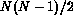 to 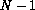 per integration interval. This relatively small number of independent errors can be determined with a least-squares fitting technique.
Any interferometer-based errors (e.g. thermal noise or correlator errors) violate the basic Selfcal assumption, and cause propagating errors in the solution. Fortunately, the WSRT correlators only contribute very
small interferometer errors (typically  0.01%),
but the S/N per uv-sample should be at least 2-5 for a good solution.
0.01%),
but the S/N per uv-sample should be at least 2-5 for a good solution.
Independent solutions can be obtained for telescope gain and phase errors, because they are mathematically `orthogonal'.
The figures of this section may help to illustrate the effects of these three methods. There is also a description of the relevant mathematical formalism. Finally, this section contains processing examples and an explanation of the output that is produced on the screen and in the log file.
.]Principal features of the Selfcal, Redundancy and Align methods.
These four maps of 3C48 may serve to demonstrate the main features of the three methods:
The radial stripes in (a) are caused by large-scale effects at specific Hour Angles. These limit the dynamic range of the 'Standard Reduction' to about 1:100 (20 dB). They are still present after a Redundancy solution, but can be be removed with an Align.
The prominent rings in (b) are caused by a slowly varying gain or phase errors between telescopes A and B. They could be removed by Redundancy, but only if there is a full solution for all 14 telescopes. Otherwise they can be removed with Align or Selfcal.
The almost perfect map in (c) is the result of Selfcal, without Redundancy. The minor remaining problems are caused by the incompleteness of the source model, particularly the small source near 3C48.
The finished product in (d) is essentially perfect, and has a dynamic range in excess of 1:10000 (40 dB), limited by the noise only. The remaining rings are the grating rings of sources which have not been completely subtracted. The result has been produced by a full Redundancy solution, followed by an Align with a model that contained about 10 point sources.
(and Reduction very low
.]The effects of Redundancy, Selfcal and Align on the visibilities in a single HA-scan.
In all four pictures, the broken line represents the `true' visibility amplitudes and phases, as a function of baseline length (u). The actual uv-data are given by crosses. Note the multiple uv-data for redundant baselines. The source model in this example (full line) is an off-axis point source.
Redundancy: In (a), he actually measured uv-samples are scattered, because of instrumental errors. After Redundancy calibration (b), the amplitudes and phases of redundant baselines are the same (except for a little residual scatter caused by noise). The result is an `internally perfect HA-scan', i.e. its shape is as it should be, but two parameters are still missing: the absolute flux and the absolute position in the sky. A map made in this stage would show radial stripes around strong sources.
Align: In (c), the perfect HA-scans that are produced by Redundancy are `Aligned' with the help of a model of the observed source. The `rigid' Scans are moved as a whole to fit the model in a weighted least-squares sense. Arrows indicate the two parameters that are determined by Align: one to shift all amplitudes vertically, and one to rotate all phases around the origin. Note that the outcome can be influenced by giving more weight to certain baselines.
Selfcal: In `normal' Selfcal (d), the source model is used to determine 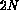 telescope gain and phase errors. Since this number of independent parameters is larger than the two that were needed for Align, the Scan is less `rigid'. This means that the data have greater freedom to adapt themselves to the wrong source model.
To counter this effect, Redundancy constraints can be added to the Selfcal solution In the NEWSTAR implementation. If the Redundancy constraints would be given infinite weight, the outcome would be identical to that of Redundancy followed by Align. However, this has the disadvantage that a Redundancy solution may have `frozen-in' errors caused by noise in certain critical baselines. Such errors may be `thawed out' by giving more weight to Selfcal (model) constraints. In the present implementation, Selfcal and Redundancy constraints have equal weights, which may be close to optimum.
.]Least-squares fit of telescope errors through matrix inversion.
The problem is formulated by the matrix equation
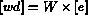 in which 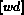 is a vector of known values, and 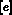 is a vector of unkown telescope errors. Each row (equation) in the matrix is multiplied by a weight factor, which determines its relative influence on the solution. The same matrix can contain a mixture of Selfcal equations and Redundancy equations, both of which have the same general form. If there are only Redundancy equations, extra constraint equations are needed to supply the missing information about the absolute gain (flux) and/or the absolute phase gradient over the array (position in the sky).
The matrix 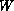 is rectangular because there are more equations than unknowns. A least-squares solution is obtained by the pseudo-inversion of :
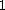
To save space and time, the NEWSTAR implementation uses the much smaller matrix 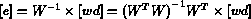 and the vector 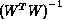, which is of course mathematically equivalent.
.] A qualitative interpretation of Selfcal, with or without Redundancy constraints.
A perfect instrument would give visibility values that are represented by a point (the true visibilities) in a 2N-dimensional visibility space. N is the number of measured uv-samples. The actual visibility values, which will be corrupted by instrumental errors, are represented by some other point in this space.
In a calibration process, a priori knowledge is used to constrain the volume of visibility space in which this other point can lie. In Selfcal, the data are compared with a model of the source (model constraints), under the assumption that the only instrumental errors are telescope-based gain and phase errors (instrumental constraints). The points in visibility space that represent Selfcal Solutions must lie in the shaded volume that is bounded by the model and Selfcal constraints. The technique works because the two constraint volumes are largely 'orthogonal' to each other, so that the intersection volume is relatively small. Every extra constraint (more telescopes, redundant spacings) will make this intersection volume smaller.

Redundancy-only is selected by not specifying a source model. The resulting telescope gain and phase errors are stored in the Scan file headers, as REDC.
**** Put new script here ****

Align is selected by specifying a source model, and explicitly specifying the ALIGN_OPTION. It is then assumed by default that the Scan is `perfect', i.e. that all 14 telescopes are grouped together. In that case, only two parameters have to be determined: the absolute gain, and the absolute phase gradient over the array. Experienced users can specify multi-parameter solutions for more than one independent groups of telescopes by manipulating the FORCE_FREEDOM keyword. The MWEIGHT keywords are used to give greater weight to those baselines (by length), for which the model is `known' to be most accurate.
The resulting telescope gain and phase corrections are stored in the Scan headers, as ALGC.
*** Put new script here ****

Selfcal is selected by specifying a source model, and explicitly specifying `Selfcal' to the ALIGN_OPTION. Redundancy constraints (equations) are included automatically if redundant spacings have been selected with SELECT_IFRS. The MWEIGHT keywords are used to give greater weight to those baselines (by length), for which the model is `known' to be most accurate.
The resulting telescope gain and phase corrections are stored in the Scan headers, as ALGC.
*** Put new script here ****

The following information per HA-scan may be printed in the LOG-file and/or displayed on the terminal screen (keyword SHOW_LEVEL).
HA Rk A(%) P(deg) A(WU) P(WU) Amax Aavg Arms dAmax
dPmax I
Set: 0.0.0.0
11.53X New phase constraints:
1 1 1 1 1 1 1 1 1 1 1 1 1 1
11.53X 01 0.6 0.2 12.9 7.1 2012 2000.0 5.2 1.9 67 0.5 58 3
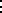
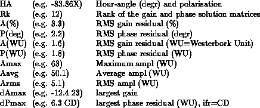
X average amplitude= 2000.005 (0.892)
X overall noise (gain, phase in W.U.): 14.2 11.1
The SELFCAL and Redundancy residuals contain a wealth of information about the quality of the data and the completeness of the SELFCAL model. The user is urged to make residual plots by means of the program NPLOT.

For all REDUN options, the user is prompted for `more details?' by the NCALIB keyword QDETAILS. Hidden behind this are a number of keywords that may be manipulated by experienced users in special cases. Their default values are optimised for normal use, and wil be printed in the NCALIB LOG-file.
 BASEL_CHECK
(M)
= 0.5 M:
BASEL_CHECK
(M)
= 0.5 M:

Criterion for two baselines to be considered redundant, i.e. of identical length.
WEIGHT_MIN
(Minimum weight accepted)
= 0.01:

The weight of Selfcal and Redundancy equations is proportional to the amplitude of their uv-data. If the amplitude is very small, the information will be very noisy, and may do more harm than good to the solution. Therefore, it may be excluded by raising the value of WEIGHT_MIN, as a fraction of the maximum weight.
SOLVE
(Solve for gain, phase (Y/N)
= YES,YES:

Normally, both a gain and a phase solution will be required. But it is possible to ask for only one at a time.
COMPLEX
(Complex solution (Y/N)
= NO:
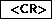
The non-linear conversion to gain and phase skews the gaussian distribution of the noise on the measured cos/sine values. Therefore, gain and phase solutions will produce a `noise bias', which is more serious for low S/N data. This can be avoided by specifying a `complex solution' (see also section
...)
FORCE_PHASE
()
= 0, 0, 0, 0, 0, 0, 0, 0, 0, 0, 0, 0, 0, 0

If the visibility phases are close to 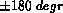, the conversion from cos/sine to phase may cause phase ambiguities (jumps) of 360 degr. This will cause problems in the phase solution, where the phases are assumed to be on a linear scale between 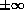. In order to avoid this, the user may specify initial phase corrections for all telescopes, which will be used to move the data away from before processing. This is of course taken into account for the total correction afterwards.
CONTINUITY
(Continuity in solution (Y/N)
= YES:

Normally, the HA-scans are processed in HA-order. The gain and phase errors determined for the last Scan may be used to correct the data of the next Scan before processing. (This is of course taken into account for the total correction afterwards). This approach is useful to keep phases away from , where they may cause unwanted phase-ambiguity problems.
CHECKS
(Maximum deviations)
= 5,5,3:

The user may set some threshold values for an automatic check on the quality of the solution of each HA-scan. A warning will be issued in the log whenever the tresholds are exceeded. However, no further action is taken by the program!
.
.
.
.
.
.
.
.
.
.
.
.
.
.
.
.
.
.
.
.